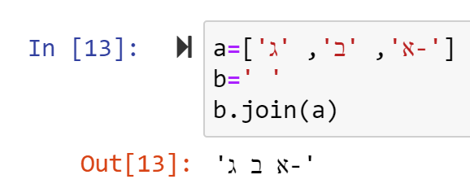
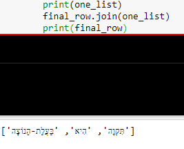
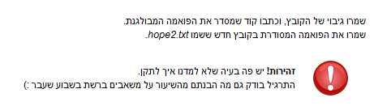

סתם שאלה, לפני שאני מתחיל לפתור…
רשום בתחתית התרגיל:
זהירות! יש פה בעיה שלא למדנו איך לתקן. התרגיל בודק גם מה הבנתם מהשיעור על משאבים ברשת בשבוע שעבר
אפשר לקבל הסבר\הכוונה על איזה משאבים ברשת מדובר בדיוק ?
עריכה:
האם מדובר על נושא ה-encoding ? אני מבין שהייתי צריך לבצע המרה.
עריכה 2:
האם הדבר הבא אמור להיות חלק מהתוכנית ?
שמרו גיבוי של הקובץ, וכתבו קוד שמסדר את הפואמה המבולגנת. שמרו את הפואמה המסודרת בקובץ חדש ששמו hope2.txt .
תודה,
חגי
aviadamar
הכוונה היא שיש משו שצריך לעשות שלא נלמד והדרך למצוא אותו היא להעזר בכלים שניתנו באחת המחברות של שבוע 2
לייק 1
Hagay2k7
היי אביעד,
תודה,
בכל מקרה עשיתי את התרגיל כולל שמירת backup ו-hope 2 כחלק מהקוד.
אז לא רואה כ"כ צורך לחזור למחברת 2 (אני משתמש בכל הכלים שניתנו עד למחברת הנוכחית)… כנראה שזכרתי משהו בלי להציץ חח
2 לייקים
orronai
אשמח לקבל עזרה מדוע הפונקציה join שאני מבצע בתוך הקוד כדי לקבל מחרוזת במקום רשימה לא עובדת לי טוב.
הפכתי כל שורה לרשימה, הפכתי את הרשימה וקיבלתי את השורה כמו שצריך לקבל - לאחר מכן ניסיתי לעשות join והפלט שלו הוא מחרוזת עם רווח.
נגיד עבור השורה:
a=[‘א’, ‘ב’, ‘ג-’]
b=’ ’
b.join(a) הוא יחזיר לי מחרוזת של רווח
Yam

orronai
זה עובד לי בתיבה אחרת אבל משום מה על כל המשתנים לא:
one_list הוא השורה המודפסת
השורה הריקה אחריה היא ה-final_row, שקודם הגדרתי אותו כ-" "

Yam
קרא שוב את המחברת פעולות על מחרוזות לא משנות את המחרוזות.
orronai
מדהים תודה !
מקווה שחסכתי לאחרים זמן
of313
מצטרך לשרשור - רשום שסדר המילים התבלבל, אבל עבור הסימון מקף (-) אני עדיין רואה אותו במיקום הנכון.
שתי השורות הראשונות שאני רואה בקובץ המקורי הן:
אז לאחר ההיפוך המקף נהיה בתחילת השורה ולא בסופו. האם ייתכן שפתחתי את הקובץ בצורה לא נכונה?
Yam
נראה לי שזה שטויות של ישור
erane2201

מה הכוונה בשמירת גיבוי של הקובץ? הכוונה ידנית או בעזרת קוד בלבד?
erane2201
כלומר? צריך לטפל בזה? או ניתן להתעלם מכך?
Yam
הגיבוי אמור להתבצע ידנית.
erane2201
כלומר, ליצור בתוך התיקייה קובץ חדש בעזרת קליק ימני של עכבר?
orronai
כלומר כמו שלמדנו איך ליצור קובץ חדש, ואליו לכתוב את התוצאה ובקובץ המקורי לא לגעת חוץ מלקרוא אותו
orpazf
המטרה היא בסך הכול שאם הקובץ המקורי נהרס יהיה אפשר לשחזר בקלות
לייק 1
erane2201
זה בסדר שהשיר מודפס ככה? או צריך לטפל בסימני פיסוק?


 פעולות על מחרוזות לא משנות את המחרוזות.
פעולות על מחרוזות לא משנות את המחרוזות.